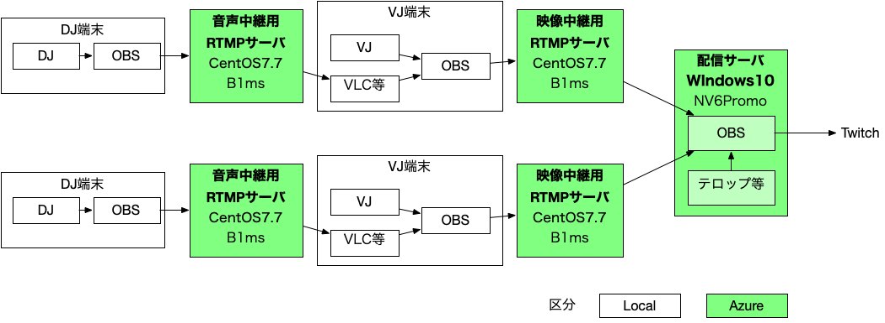

日本版OHR的なもの企画書
所信等
昨今のコロナの影響でクラブイベントがすっかりご無沙汰になっており、緊急の自粛要請が仮に5月に解けたとして、すぐにはイベント再開とはならないと見込まれる
別件の配信イベントのインフラ構築をやってみたところ、お金は少しかかるが、できないことはないことがわかってきたため、せっかくなので技術展開も兼ねてやっておきたい
ハードコア・ブレイクコアのアーティストにエンジニアが多いことは周知の通りであり、技術的難点は多いものの、みんなITリテラシー高いので実施のハードルは実は低いかもしれない
海外にはOHRのようなオンラインパーティがあるが、日本に似たようなパーティがない
場所に縛られない特性上、海外のアーティストに出演して貰うことも可能であり、ある意味で普段のクラブでできないことが実現可能
マネタイズは難しいだろうけど、単純に技術的に面白そう
開催予定日
5月〜6月のどこかの週末
時間は出演者との要調整
構成

所謂”Music Unity”方式を応用したもの
DJの音声をRTMPサーバを中継する形でVJに連携
VJで音にあった映像を付け映像中継用RTMPサーバに連携
配信サーバでOBSの入力を切り替えながら配信
配信先はいったんTwitchを想定
音楽についてはJASRACと包括契約を結んでいるため、それが原因で止まる心配が無い
超ザックリとしたAzureのインフラのコスト試算は1時間当たり約300円です。
メンバ
VJ
VJには僕と、AWSのエンジニアやってるzukutya君をアサインしたい気持ち
まだ話すらしてない
Tokyo GabberdiscoのVJコンビになるかな
DJ
すくなくとも初回はITリテラシー高めの人で固めたい
場所の制約をうけないので、海外のアーティストにも協力いただきたい
マネタイズ
配信イベントのマネタイズ難しすぎる
いったん視聴者からの募金でどの程度あつまるのかを見たい
PayPal donation
正直使ったことないので、知見ある方いたら聞きたい・・・
インフラコストを差し引いた残りを均等分配か、次回開催の予算にするか。
ここは相談させてください。